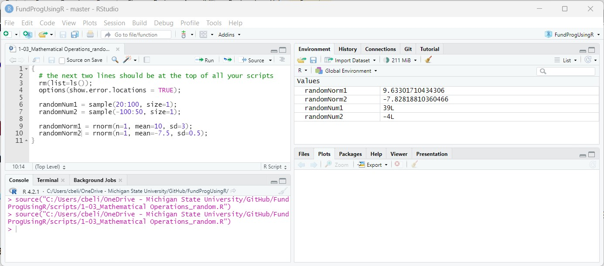

Variables
Vectors and Dataframes
- add script for this lesson?
Perform mathematical operations, including powers, on numerical variables
Explicit use of multiplication symbols in formulas
Convert algebraic formulas to programming formulas
Use parentheses to establish the order of operations for formulas
If you have any questions about the material in this lesson feel free to email them to the instructor here.
Once again, we will calculate velocity using distance and time, except, we will now use the full version of the velocity formula, which looks at the changes in distance and time as opposed to absolute distance and time.
The full velocity formula is (subscript i means "initial", subscript f means "final"):
(If ti and di are zero then you get the formula we used in Lesson 1-2: )
We are going to code this formula, but there are a couple of issues:
In script, everything goes left-to-right so you cannot write a fraction as you would in Algebra. Instead, we need to be more explicit and put both both the numerator and the denominator in parentheses:
Then, pull out the fraction between the numerator and denominator and replace it with a division sign:
Now the formula is all on one line, but the symbols need to be replaced with valid variable names that do not have subscripts:
This is now a valid line of code in R -- assuming all variables on the right have assigned values.
velocity = (finalDist - initDist) / (finalTime - initTime);
The line of code above says that velocity will be assigned the value equal to the calculations on the right side of the equation.
In most programming languages the equal sign is used to assign values, and the equal sign always evaluates what is on the right side and assigns it to the variable on the left. In R, there are two other ways to assign values -- using arrow signs:
velocity <- (finalDist - initDist) / (finalTime - initTime); # commonly used
(finalDist - initDist) / (finalTime - initTime) -> velocity; # rarely used
The top ( <- ) is the most commonly used in R and the bottom ( -> ) works but is rarely used anymore. I prefer using ( = ) to ( <- ) because ( = ) is used in most programming languages whereas ( <- ) is not. The two symbols are functionally the same in R. In previous R versions, there was a small difference between the two but that is not true anymore.
Here is the full script calculating velocity with a small error on line 7:
rm(list=ls()); # clean out the environment
options(show.error.locations = TRUE); # give line numbers on errors
finalDistance = 100;
initDistance = 50;
finaltime = 20; # error on this line -- misspelled variable name
initTime = 15;
velocity = (finalDistance - initDistance) / (finalTime - initTime);
Every variable on the right side of the equation on line 9 must be given a value beforehand -- otherwise, you will get the pesky "Object not found" error as shown in the image below (Fig.##)
Object not found because the variable name does not exist (it is misspelled).
Note: Object is almost synonymous with Variable in R. The error is basically saying that there is no variable with that name. Any spelling error will cause the "Object not found" error. In this case I "spelled" the variable name wrong by changing the case of the T. finaltime is not the same as finalTime.
Here is the working code:
rm(list=ls()); # clean out the environment
options(show.error.locations = TRUE); # give line numbers on errors
finalDistance = 100;
initDistance = 50;
finalTime = 20;
initTime = 15;
velocity = (finalDistance - initDistance) / (finalTime - initTime);

Misspelled variable name corrected -- script now calculates velocity.
We will look at one more formula that relates kinetic energy to mass and velocity:
There are two new issues with coding this formula:
So let's first pull the one-half out of fraction form and into division form:
We need to be more explicit because this formula could be misinterpreted by the reader as , so we need to put the one-half in parenthesis:
Next, we will explicitly put in the multiplication symbols -- a necessity in programming:
Trap: Forgetting multiplication symbol
And then change the symbols to script-friendly variable names:
In R the ( ^ ) is the power operator. So ^2 means raise to the power of 2 (or square):
# this formula works...
kineticEnergy = (1/2)*mass*velocity^2;
While the above works correctly, it is often helpful to be explicit and add parenthesis around the value or values that are getting raised to the power:
# more explicit solution
kineticEnergy = (1/2)*mass*(velocity)^2;
The ( ^ ) operator works for all powers including square roots, cubed roots, and mixed powers (e.g., raising to the 3/2 or 5/3).
Let's rearrange the kinetic energy formula to solve for velocity, which requires a square root
To put the above formula into a script form, we need to:
1) Put the numerator and denominator on one line by taking out the fraction and replacing it with a division sign.
2) Be explicit and put in multiplication symbols.
3) Spell the formula out using script-friendly variable names:
4) Use the power operator ( ^ ) to square root the whole formula. Square rooting something is the same as saying "raise it to the 1/2 power". Since we are square rooting a function of multiple variables, we need to put the whole formula in parenthesis.
So we have this in R:
rm(list=ls()); # clean out the environment
options(show.error.locations = TRUE); # give line numbers on errors
kineticEnergy = 50;
mass = 5;
velocity = (2*kineticEnergy / mass)^1/2; # still a problem here!

Incorrect answer for velocity because the power is missing parentheses
The Environment tab (Fig.##) shows that v is, unexpectedly, 10. This is because of the order-of-operations. Instead of raising the (2*kineticEnergy/mass) to the 1/2 power, the above code raised (2*kineticEnergy/mass) to the first (1) power and then divided everything by 2. We need to be more explicit and put the 1/2 in parenthesis.
rm(list=ls()); # clean out the environment
options(show.error.locations = TRUE); # give line numbers on errors
kineticEnergy = 50;
mass = 5;
velocity = (2*kineticEnergy / mass)^(1/2); # now we are good!

Correct answer for velocity
This style will work for all powers and roots:
rm(list=ls()); # clean out the environment
options(show.error.locations = TRUE); # give line numbers on errors
kineticEnergy = 50;
mass = 5;
test1 = (2*kineticEnergy / mass)^(1/3); # third root
test2 = (2*kineticEnergy / mass)^(5); # fifth power
test3 = (2*kineticEnergy / mass)^(5/3); # mixed root and power
test4 = (2*kineticEnergy / mass)^(3.17); # decimal power

Testing different powers in R
In R, you will mostly see square roots done using the sqrt() function:
velocity = sqrt(2*kineticEnergy / mass); # how square roots are usually done
sqrt() works just fine but there is no equivalent for all the other types of powers and roots. That is why I prefer to use the ( ^ ) operator -- it is easy to remember and you can use it for every power and root situation -- you just need to attach the appropriate number.
velocity = (2*kineticEnergy / mass)^(1/2); # how I prefer to do them
In the example above (fig ##) we hardcoded the values for kineticEnergy and mass, which just means we directly provided a values for the two variables. We can also randomly pick values for variables using sample().
sample() requires two arguments:
The code to pick a random number between 20 and 100 is:
randomNum1 = sample(20:100, size=1);
note: 20:100 is inclusive of the numbers on both ends -- so, 20 and 100 are both possibilities meaning there are 81 possible numbers to choose randomly from
The code to pick a random number between -100 and -50 is:
randomNum2 = sample(-100:-50, size=1);
sample() always returns a whole number.
sample() treats every number the same. If there are 100 numbers in the range then every number has a 1% chance of being picked. If you want to pick a random value, but weigh the value (e.g., a normally distributed random values) then you can use rnorm().
rnorm() requires three arguments:
The code to pick one random number from a normal distribution with mean 10 and standard deviation 3 is:
randomNorm1 = rnorm(n=1, mean=10, sd=3);
The code to pick one random number from a normal distribution with mean -7.5 and standard deviation 0.5 is:
randomNorm2 = rnorm(n=1, mean=-7.5, sd=0.5);
rnorm() always returns a decimal number

Picking random numbers -- the random numbers will be different each time you execute the code
A) Add this code as the third line in your script (right after the rm() and options() lines):
set.seed(5);
The third line will make sure that you get the same "random" number every time you execute your script by creating a seed value. Seed values are covered in a much later lesson.
B) Create six variables that hold length values:
C) Calculate the (a) mean, (b) variance, and (c) standard deviation of the six values.
Visit this page if you need a reminder about how to calculate mean, variance, and standard deviation
D) Make sure the 6 values, their mean, their variance, and their standard deviation appear in the Environment tab after the script is executed.
E) Challenge: Pick a random two-digit decimal number between 0 and 1 (e.g., 0.23, 0.89, 0.10)
F) Save the script as app1-03.r in your scripts folder and email your Project Folder to the instructor.
Instructions for zipping the Project Folder are here.
If you have any questions regarding this application, feel free to email them to the instructor here.
Answer the following in comments inside your application script:
If you have a long mathematical formula to execute in code, there is a good chance that you will want to break the code up into multiple lines.
To keep it simple, let's add 5 values together across multiple lines:
c = 10 + 10 + 10 +
10 + 10;
If you put the above code in you script, then you will get c = 50 in the Environment.
However, this code:
d = 10 + 10 + 10
+ 10 + 10;
will put d=30 in the Environment.
This is because, in the case of d, R did not know the continue the command to the second line. R treated the first line as the complete command. By putting the ( + ) at the end of the first line for c, R knew it needed to continue the command to the next line.
By the way, R does do something with the second line for d -- it prints the answer to Console if you click Run:
> d = 10 + 10 + 10
> + 10 + 10;
[1] 20
In other words:
+ 10 + 10
is a command that give 20 as a result...
Let's say you are solving for kinetic energy:
And you have a value for velocity (v) and mass (m)
rm(list=ls()); # clean out the environment
options(show.error.locations = TRUE); # give line numbers on errors
m = 100;
v = 10;
KE = ????; # should be: KE = (1/2)*m*v^2;
If you make line 7:
KE = 1/2*mv^2;
Then you will get the error: "object 'mv' not found" in the Console Window because R does not realize you want to multiply the variables m and v, it thinks you are trying to use a variable named mv, but the variable mv does not exist.
If you make line 7:
KE = (1/2)m*v^2; # same error arises if you do 1/2m*v^2
you will get the error: "unexpected symbol" (Fig.##) and the Console Window will point to the m

Unexpected symbol error
In this case, R is expecting an operation after (1/2) that is represented by a symbol. m is a variable, not a operation, hence the error.
One problem that crops up quite often in programming is that none of the numbers used in calculations have units. So we often have lines of code without any mention of units like this:
# find an average of the following three weights
weight1 = 175;
weight2 = 200;
weight3 = 210;
aveWeight = (weight1 + weight2 + weight3) / 3;
And if we add units to the number...
# find an average of the following three weights
weight1 = 175lb; # causes "unexpected symbol" error
weight2 = 200lb;
weight3 = 210lb;
aveWeight = (weight1 + weight2 + weight3) / 3;
We get the error "unexpected symbol" on line 2 because R is expecting some sort of operation after the number 175 and lb is not a valid operation. Lines 3 and 4 would also cause an "unexpected symbol" error but R ceases executing at the first error.
It is best to mention the units somewhere in the comments especially if your script is large or others are using your script.
# find an average of the following three weights (all in pounds)
weight1 = 175;
weight2 = 200;
weight3 = 210;
aveWeight = (weight1 + weight2 + weight3) / 3;
Otherwise, you risk a situation like the Mars Climate Orbiter crash, which could have easily been avoided with proper comments.